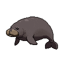
Manatee
A gentle “sea cow” that grazes seagrass and surfaces every few minutes to breathe.
0 M · Sea level
A dive to the bottom of the sea.
Sink from the sunlit surface all the way down to the floor of the Challenger Deep — 10,935 m — meeting the real creatures that live at each depth on the way.
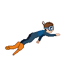
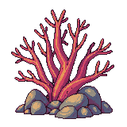
No goals. No timers. No combat.
Just you, a headlamp, and the slow weightless drift into the dark.
Put on headphones, turn the lights down, and descend.
0 – 200 m
Warm, sunlit waters where most ocean life thrives.

A gentle “sea cow” that grazes seagrass and surfaces every few minutes to breathe.
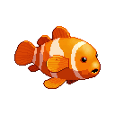
Lives unharmed among a sea anemone’s stinging tentacles, which guard it from predators.
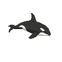
The ocean’s top predator; pods hunt as a team and speak their own dialects.
200 – 1,000 m
Fading blue gloom — cold, dim, lit by living glow.
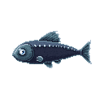
Maybe the most abundant vertebrate on Earth, glowing with rows of light organs.
A real sea monster — rarely seen alive, it can grow as long as a school bus.
1,000 – 4,000 m
Eternal black, near-freezing, crushing dark.
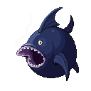
Dangles a glowing lure to draw prey into total darkness.
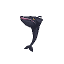
A huge balloon-like mouth lets it swallow prey larger than itself.
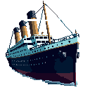
The wreck has rested on the seafloor here since 1912.
Flaps ear-like fins to “fly” through the deep — the deepest-living octopus.
4,000 – 6,000 m
Frigid, pitch-black plains under immense pressure.
A plump pink sea cucumber that walks the abyssal mud on tube-foot “legs.”
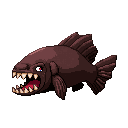
Has the largest teeth, for its body size, of any fish in the ocean.
6,000 – 10,935 m
Deepest trenches: crushing, lightless, barely alive.
The deepest shipwreck ever found, lost in WWII’s Battle off Samar.
The deepest fish ever filmed; its jelly-like body withstands the crushing pressure.
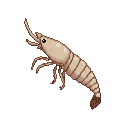
A shrimp-like scavenger thriving at the very bottom of the trenches.
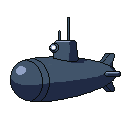
10,935 M · Challenger Deep
You made it all the way down. This is as deep as the planet goes.
Free
Dive the surface down to 1,000 m — the Sunlight & Twilight zones, ~30 creatures.
$2.99 once
Unlock the Deep. The Midnight, Abyss & Hadal zones to the trench floor, 40 more creatures, and the deep landmarks. No subscriptions, no ads.
Original pixel art · procedurally generated ambient audio · gentle haptics · game-controller support.
Below the floor · The fine print
ABYSM has no account, no login, no ads, and no advertising or cross-app tracking. It is a single-player game that you can play start to finish without ever creating an identity.
Your current dive’s depth and horizontal position, sound preference, and cached unlock state are stored locally on your device (via UserDefaults). The app follows the language selected in iOS and does not store a separate language preference. This local game data does not leave your device.
The single in-app purchase, “Unlock the Deep,” is processed through RevenueCat. RevenueCat is contacted at launch and for purchase or restore operations. It receives an anonymous app-user ID, purchase and entitlement information, and basic technical information needed to provide and validate the unlock. This information is not used for advertising or cross-app tracking. See RevenueCat’s privacy policy for its processing details.
Purchases (Purchase History) — not linked to your identity, not used for tracking. That’s the whole label.
Privacy questions: ad13dtu@gmail.com · Developer: apoorvdarshan@gmail.com
Below the floor · The fine print
ABYSM is a game for iPhone and iPad. It is free to download and play from the surface down to 1,000 m. A single, one-time in-app purchase — “Unlock the Deep,” a non-consumable priced at $2.99 (USD; localized by the App Store) — opens the descent below 1,000 m to the trench floor.
The unlock is one-time and permanent — no subscriptions, no consumables, no recurring charges. It can be restored on a fresh install or another device signed in to the same Apple ID. All payments, refunds, and billing are handled by Apple under the standard App Store terms; ABYSM never sees or stores your payment details.
ABYSM is provided as-is, for your personal enjoyment. Please don’t decompile, redistribute, or resell the app or its art, audio, and creature content. The name, artwork, generated audio, and code are © Apoorv Darshan, all rights reserved.
The game is offered without warranty of any kind. It is a calm exploration toy, not a source of scientific, navigational, or diving advice — real deep-sea diving is considerably less forgiving.
Terms questions: ad13dtu@gmail.com · Developer: apoorvdarshan@gmail.com